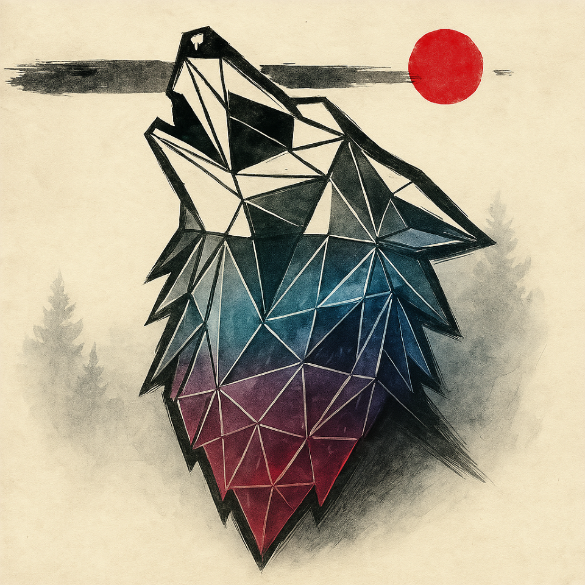

Gustavo
📍 Corrientes, Argentina
31 años
⚙️ Habilidades Backend
🎬 Películas Favoritas
🎵 Música Favorita
🛠️ Sobre mí
Soy un desarrollador backend especializado en arquitecturas escalables y sistemas distribuidos. Me fascina resolver problemas complejos y optimizar el rendimiento de aplicaciones que manejan grandes volúmenes de datos.
En mi tiempo libre disfruto explorando nuevas tecnologías emergentes, contribuyendo a proyectos open source, y sumergiéndome en películas de ciencia ficción que me inspiran a pensar en el futuro de la tecnología.